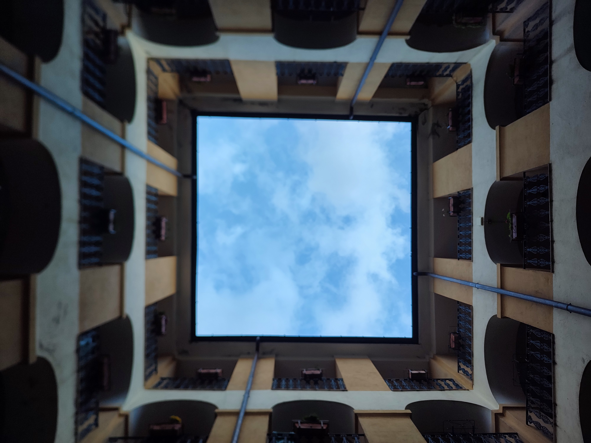
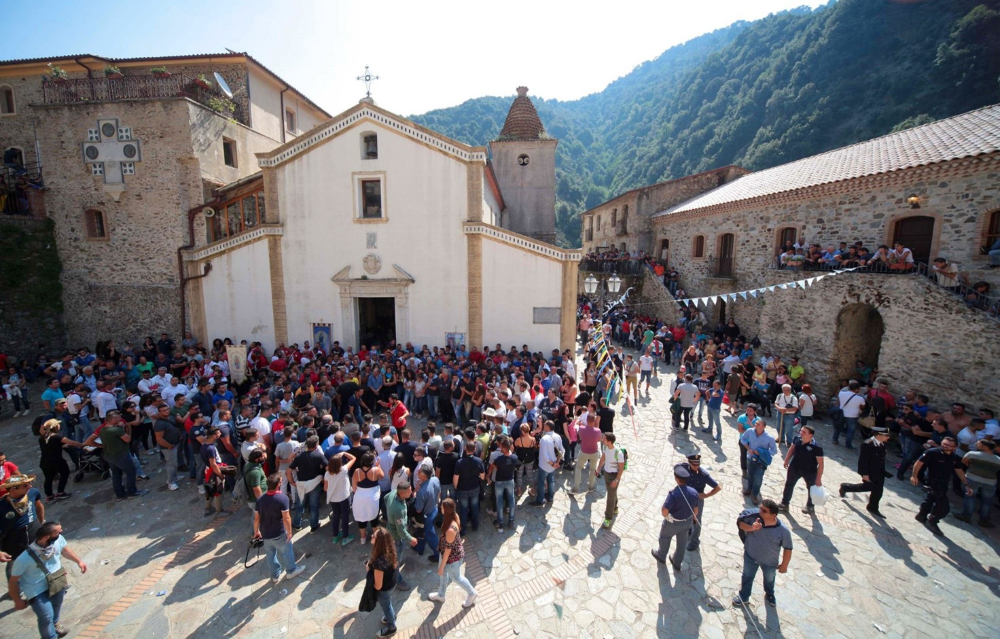
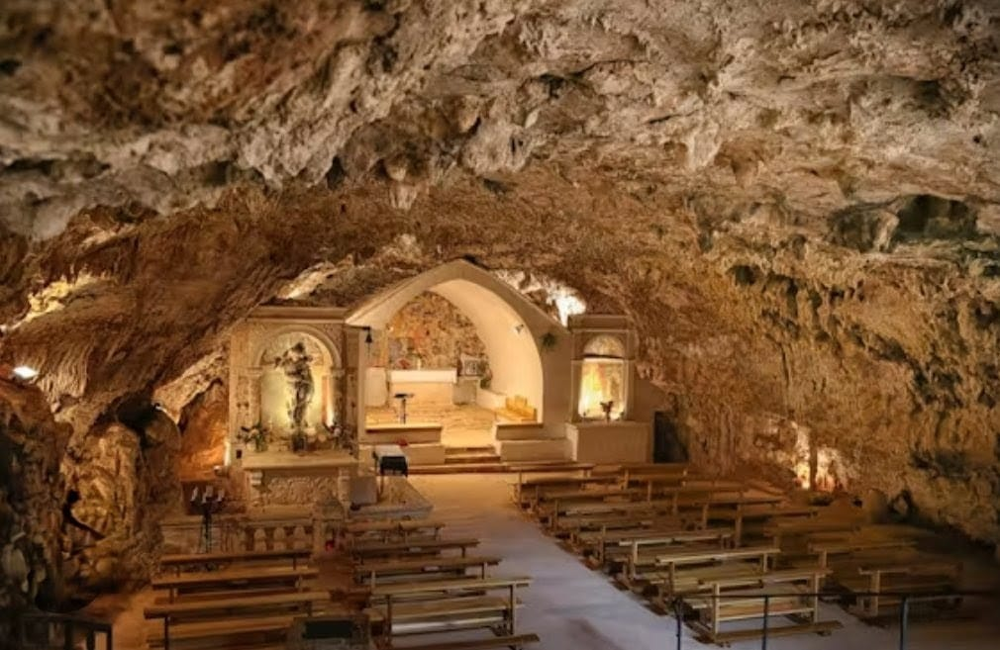
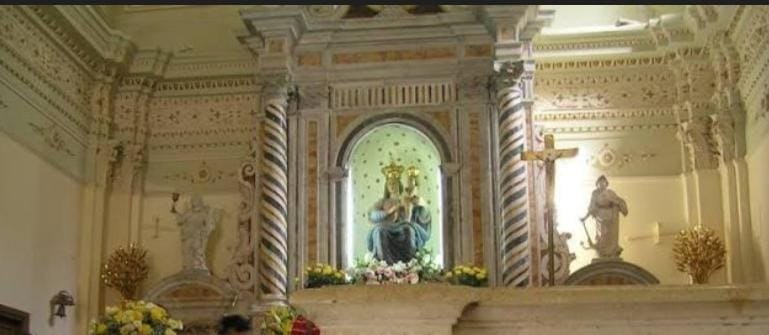
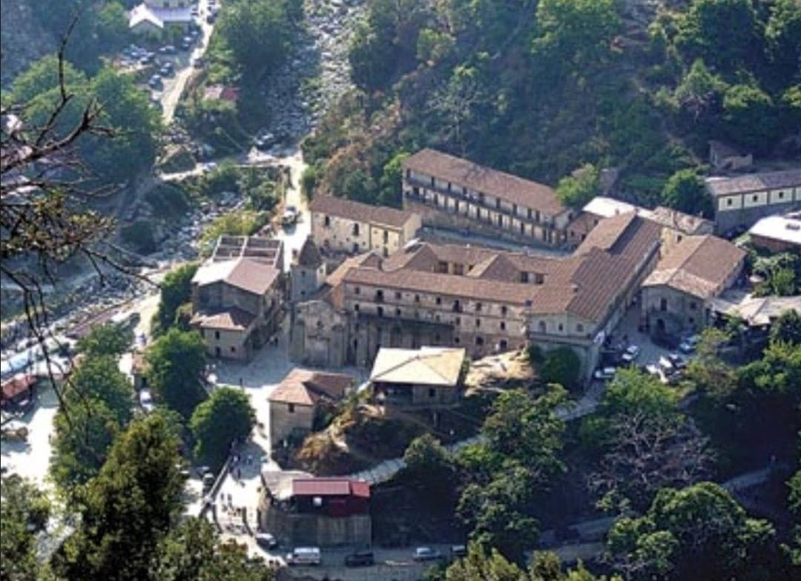

San Luca
Cuore spirituale dell'Aspromonte, tra il Santuario di Polsi, la casa di Corrado Alvaro e paesaggi montani mozzafiato.
Altitudine
250 m s.l.m. (min 36 m, max 1955 m)
Fondazione
18 ottobre 1592
Abitanti
3.417
Figlio Illustre
Corrado Alvaro (1895-1956)
Un Villaggio nell'Aspromonte Selvaggio
Il Cuore dell'Aspromonte
San Luca è un piccolo centro situato nel cuore dell'Aspromonte, nella parte meridionale della Calabria, all'interno della Città Metropolitana di Reggio Calabria. Il territorio si estende tra montagne, vallate e torrenti, in un contesto naturalistico di grande valore che rientra nel Parco Nazionale dell'Aspromonte. Con una superficie di oltre 105 km², è il secondo comune più esteso della provincia dopo Reggio Calabria.
Il paese offre panorami mozzafiato sul Mar Ionio e rappresenta una delle mete più suggestive dell'Aspromonte, con i suoi stretti vicoli medievali e la sua ricca tradizione spirituale.
Le Origini Millenarie
Da Potamìa a San Luca
Le origini del territorio sono antichissime: tracce di insediamenti umani risalgono al Neolitico, come testimoniano asce litiche e ceramiche rinvenute in località come Cuppo e Pietra Cappa. In epoca greca, l'area era frequentata come testimoniano reperti ceramici di stile corinzio e jonico, simili a quelli di Locri.
Il nucleo originario dell'attuale San Luca fu Potamìa, un antico centro abitato distrutto da un'alluvione. L'odierno paese fu fondato ufficialmente il 18 ottobre 1592 e dedicato a San Luca Evangelista, la cui festa ricorre proprio in quel giorno.
L'Evoluzione del Territorio
Questa evoluzione storica ha lasciato nel territorio tracce importanti dell'influenza bizantina e normanna, visibili ancora oggi nei monumenti e nelle tradizioni locali. I resti dei castelli medievali e dei monasteri (San Giorgio, San Costantino, Santo Stefano) testimoniano secoli di storia che hanno plasmato l'identità di questo borgo aspromontano.
Il Patrimonio Religioso e Storico
Il Santuario di Polsi
Il luogo simbolo della spiritualità locale è il Santuario di Polsi, dedicato alla Madonna della Montagna e fondato nel 1144. Uno dei più importanti santuari mariani del Sud Italia, è meta di pellegrinaggi che richiamano ogni anno migliaia di fedeli soprattutto da Calabria e Sicilia. La festa principale si celebra il 2 settembre, con una veglia notturna di preghiera, canti e tarantelle che anima l'intera vallata.
Chiese e Ruderi Bizantini
Tra gli edifici religiosi del paese spicca la chiesa di Santa Maria della Pietà, che custodisce un dipinto della Deposizione del Seicento e statue provenienti dall'antica Potamìa. Dell'eredità bizantina restano i ruderi della "Chiesa di San Giorgio", risalente circa al X secolo, luogo di ritiro per religiosi ed eremiti.
Natura e Paesaggio
Lago Costantino e i Monoliti
Di grande interesse naturalistico è l'area del Lago Costantino, formatosi nel 1973 a causa di una frana che sbarrò il corso del torrente Bonamico, oggi quasi interrato dai sedimenti. Il territorio è inoltre caratterizzato da imponenti formazioni rocciose conglomerate: Pietra Lunga, Pietra Castello e la monumentale Pietra Cappa, uno dei più grandi monoliti d'Europa, situata nel vicino territorio di San Luca.
Itinerari Naturalistici
L'area offre opportunità uniche per l'osservazione della fauna locale e per escursioni tra boschi di leccio e macchia mediterranea. I sentieri si snodano in un ambiente incontaminato dove è possibile avvistare rapaci, cinghiali e, nelle zone più remote, il lupo appenninico recentemente tornato in queste montagne. Il territorio comunale raggiunge i 1955 metri di altitudine con la cima di Montalto.
Corrado Alvaro: Il Grande Scrittore di San Luca
La Casa Natale
Tra i figli più illustri di San Luca spicca Corrado Alvaro (1895-1956), considerato il maggiore degli scrittori calabresi e una delle figure più importanti della letteratura italiana del Novecento. Nel centro del paese, in via Garibaldi, è possibile visitare la sua casa natale, un edificio a tre livelli risalente al XVIII secolo, situato nei pressi della piazza Umberto I.
L'abitazione conserva ancora oggi l'arredamento dell'epoca, la stanza da letto e numerosi libri appartenuti allo scrittore, autore del celebre romanzo "Gente in Aspromonte" e vincitore del Premio Strega nel 1951 con "Quasi una vita".
La Fondazione Corrado Alvaro
All'interno dello stesso edificio ha sede la Fondazione Corrado Alvaro, ente no-profit nato per onorare la memoria dell'insigne scrittore. La fondazione è un centro di riferimento per lo studio dell'opera alvariana e della letteratura meridionale, organizzando il Premio Nazionale Corrado Alvaro e curando la digitalizzazione dei suoi autografi.
Tradizioni e Cultura Locale
Folklore Aspromontano
San Luca conserva vive le tradizioni folkloristiche dell'Aspromonte, con feste paesane, canti tradizionali e artigianato locale che riflettono l'identità culturale della comunità.
Cucina di Montagna
La gastronomia locale è ricca di specialità tipiche: formaggi di capra, salumi artigianali, miele di castagno e vini dell'Aspromonte che esprimono il carattere montano del territorio.
Festa della Madonna di Polsi
La festa più importante è quella dedicata alla Madonna di Polsi (2 settembre), con pellegrinaggi, processioni e riti che coinvolgono migliaia di fedeli provenienti da tutta la regione.
Prodotti del Bosco
Fungo, castagne e piccoli frutti rappresentano le eccellenze del territorio, raccolti ancora oggi secondo antiche tradizioni tramandate di generazione in generazione.
Galleria Fotografica






Info Utili
Come Arrivare
In Auto: SS106 Jonica, uscita Bovalino. Da lì
seguire le indicazioni per San Luca (circa 15 km in direzione
Aspromonte).
Dista circa 30 km da Siderno e 90 km da Reggio Calabria.
Parcheggio disponibile nel centro abitato.
Comune e Informazioni
Comune di San Luca
Corso Corrado Alvaro, 2
89030 San Luca (RC)
Tel: 0964 985012 (Ufficio Anagrafe)
Email:
servizioanagrafe@comune.sanluca.rc.it
PEC: anagrafe.comunedisanluca@asmepec.it
Sito web:
www.comune.sanluca.rc.it
Commissario prefettizio: Rosario Fusaro (dal
2024)
Fondazione Corrado Alvaro
Fondazione Corrado Alvaro
Via Garibaldi, 8
89030 San Luca (RC)
Tel: 0965 2410
Email:
info@fondazionecorradoalvaro.it
Sito web:
www.fondazionecorradoalvaro.it
Visite su appuntamento
Trasporti
Stazione Ferroviaria più vicina: Bovalino
(linea Jonica Reggio Calabria-Taranto)
Autobus: Collegamenti da Bovalino e Siderno con
autolinee locali
Trasporto Locale: Taxi e servizio navetta da
Bovalino su prenotazione